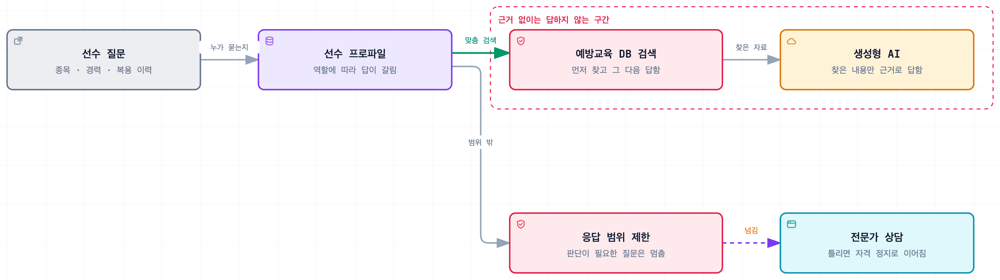

생성형 AI 기반 맞춤형 반도핑 예방교육 시스템
근거를 대지 못한 AI 답은 서버가 걸러내는 반도핑 교육 시스템
Impact
- 114개자동 테스트
Background
도핑 예방 교육은 모든 선수에게 같은 자료를 나눠 주는 방식이었습니다. 종목과 경력, 복용 이력이 다른데 같은 내용을 받으면 자기 상황에 해당하는 부분을 선수가 직접 찾아야 합니다. 선수 데이터와 생성형 AI를 결합해 선수별로 다른 교육 자료를 만드는 시스템입니다.
논문에 실을 시연용 프로토타입이고, 선수 데이터는 합성 데이터입니다. 선수 대상 시범 적용은 이후 단계입니다.
Architecture

Contributions
근거를 인용한 답만 내보낸다
생성형 AI가 아는 대로 답하면 예방 교육이라고 할 수 없습니다. 예방교육 데이터베이스를 먼저 검색하고 그 내용을 근거로만 답하도록 RAG 파이프라인을 만들었고, 선수 프로파일과 사용자 역할에 따라 같은 질문에도 다른 수준의 답이 나가도록 프롬프트를 설계했습니다. 모델 응답은 답변·인용 목록·전문가 확인 여부·범위 밖 여부로 나뉜 구조화 응답으로 받고, 서버가 인용이 실제로 검색된 문서인지 확인해 근거를 대지 못한 답은 정해 둔 문구로 바꿉니다. 전문가 확인 표시는 모델 판단과 서버 규칙 중 하나만 걸려도 켜지게 했습니다. 검사를 피하는 방법을 묻는 질문에는 서버가 바로 고정 답변을 주며, 평범한 교육 질문이 막히지 않는 것도 테스트로 확인했습니다.
약물 판정은 조회표로
도핑은 잘못된 정보가 선수의 자격 정지로 이어지는 영역입니다. 금지 여부를 모델에게 물으면 그럴듯한 오답이 나올 수 있어서, 판정은 출처 URL이 붙은 조회표에서 금지·경기기간 중 금지·기준을 넘으면 금지·목록에서 확인되지 않음·성분 확인 필요의 다섯 가지로만 내리고 모델은 설명만 맡겼습니다. 목록에 없는 성분은 "목록에서 확인되지 않음 · 확인 필요"로 안내합니다.
역할과 선수 ID는 세션에서만
선수 개인의 교육 프로파일은 본인만 봅니다. 역할과 선수 ID는 접근 코드로 만든 세션에서만 꺼내게 해서, 본문에 다른 선수 ID를 넣어도 무시되는 것을 테스트로 확인했습니다. 지도자에게는 인원수 없이 팀에 필요한 교육 주제만 보입니다. 다섯 명 팀에서는 "1명"이라는 숫자만으로 누군지 알 수 있기 때문입니다. 선수를 판정하는 표현이 화면·API·프롬프트 코드에 들어가면 실패하는 테스트를 두었습니다.
시범 서버는 검토된 데이터로만 시작
지금의 판정 기준은 합성 데이터로 정한 값이라 실제 선수에게 쓰면 근거가 없습니다. 모델 파라미터의 출처가 합성이거나 연구진 검토를 거치지 않은 약물 항목이 하나라도 있으면, 시범 모드에서는 서버가 시작을 거부합니다.